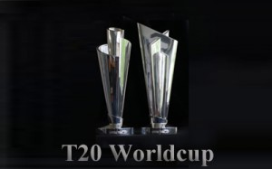

T20 World cup:

The trophy weighs up to 7.5 Kilograms. It is the most viewed and popular tournament as it the shortest and has the best source of entertainment and excitement. The very first tournament was held in the year 2011 and surprisingly India took it away and that is how this format made a huge impact in India. And T20 World Cup became highly popular in all the nations soon enough. The excitement and the energy are unparalleled and interest among the cricket lovers is astonishing! This tournament brought the pinch hitters and even clever wicket takers. Here the strength and selection of shots matter rather than technique and class defense.
| Year | Host | Winner | Runner-up | Final Result |
| 2007 | South Africa | India | Pakistan | India won by 5 runs (Scorecard) |
| 2009 | England | Pakistan | Sri Lanka | Pakistan won by 8 wickets (Scorecard) |
| 2010 | West Indies | England | Australia | England won by 7 wickets (Scorecard) |
| 2012 | Sri Lanka | West Indies | Sri Lanka | West Indies won by 36 runs (Scorecard) |
| 2014 | Bangladesh | Sri Lanka | India | Sri Lanka won by 6 wickets (Scorecard) |
| 2016 | India | West Indies | England | West Indies won by 4 wickets (Scorecard) |
| 2018 | TBC | TBC | TBC | TBC |
| 2020 | Australia | TBC | TBC | TBC |